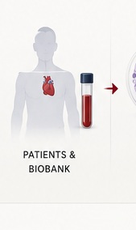

Aging & Cardiovascular Disease
Understanding how biological aging reshapes cardiovascular resilience.

Our scientific focus
Aging is a major determinant of cardiovascular disease, but chronological age alone does not capture the biological processes that drive vascular and cardiac decline. We investigate inflammatory, cellular, and molecular features of cardiovascular aging.
From human disease to mechanism.
Our work integrates human data, computational approaches, patient-derived models, and iPSC-based cardiovascular systems to study how aging influences endothelial function, vascular integrity, cardiac performance, and responses to stress. We are particularly interested in interactions among aging, genetics, inflammation, and environmental exposures.
Connecting this program across the Sayed Lab.
See the platforms, publications, and people that make this research possible.